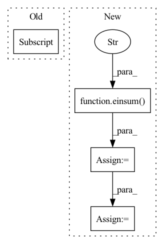

Pattern ID :232
Before Change
if self.causal:
weight, bias = weight[:n, :n], bias[:n]
mask = torch.ones(weight.shape[:2], device = device).triu_(1).bool()
weight = weight.masked_fill(mask[..., None] , 0.)
gate = F.conv1d(gate, weight, bias)
After Change
mask = torch.ones(weight.shape[:2], device = device).triu_(1).bool()
weight = weight.masked_fill(mask, 0.)
gate = einsum("b n d, m n -> b m d" , gate, weight)
gate = gate + rearrange(bias, "n -> () n ()")
if exists(gate_res):
gate = gate + gate_resIn pattern: SUPERPATTERN
Frequency: 4
Non-data size: 4
Instances Fragment ID: 857549
Project Name: lucidrains/g-mlp-pytorch
Commit Name: 9b986391ce83028dbf30dcb5f64c8e3cdf5efd6f
Time: 2021-08-13
Author: lucidrains@gmail.com
File Name: g_mlp_pytorch/g_mlp_pytorch.py
M Class Name: SpatialGatingUnit
N Class Name: SpatialGatingUnit
M Method Name: forward(3)
N Method Name: forward(3)
M Parent Class: nn.Module
N Parent Class: nn.Module
M File Name: g_mlp_pytorch/g_mlp_pytorch.py
N File Name: g_mlp_pytorch/g_mlp_pytorch.py
M Start Line: 91
M End Line: 99
N Start Line: 101
N End Line: 118
Before Change
gate = self.norm(gate)
weight, bias = self.weight, self.bias
weight, bias = weight[:, :n, :n] , bias[:, :n]
mask = torch.ones(weight.shape[:2], device = device).triu_(1).bool()
weight = weight.masked_fill(mask[..., None], 0.)After Change
weight = weight.masked_fill(mask[None, ...], 0.)
gate = rearrange(gate, "b w n (h d) -> b w h n d", h = h)
gate = einsum("b w h n d, h m n -> b w h m d" , gate, weight)
gate = gate + rearrange(bias, "h n -> () () h n ()")
gate = rearrange(gate, "b w h n d -> b w n (h d)")
out = gate * res
out = rearrange(out, "b w n d -> b (w n) d")
return out[:, :n]
def gMLPBlock( Fragment ID: 857548
Project Name: lucidrains/g-mlp-gpt
Commit Name: a2f065dfcf7be1d1e4b205ac1a55de4ad1b3327d
Time: 2021-05-20
Author: lucidrains@gmail.com
File Name: g_mlp_gpt/g_mlp_gpt.py
M Class Name: CausalSpatialGatingUnit
N Class Name: CausalLocalSGU
M Method Name: forward(2)
N Method Name: forward(2)
M Parent Class: nn.Module
N Parent Class: nn.Module
M File Name: g_mlp_gpt/g_mlp_gpt.py
N File Name: g_mlp_gpt/g_mlp_gpt.py
M Start Line: 90
M End Line: 100
N Start Line: 130
N End Line: 154
Before Change
embed_normalized = (embed_sum / bins.unsqueeze(0)).t()
embed_normalized = l2norm(embed_normalized)
embed_normalized = torch.where(zero_mask[..., None] , embed,
embed_normalized)
ema_inplace(self.embed, embed_normalized, self.decay)
self.expire_codes_(x)After Change
embed = self.embed if not self.learnable_codebook else self.embed.detach()
embed = l2norm(embed)
dist = einsum("h n d, h c d -> h n c" , flatten, embed)
embed_ind = gumbel_sample(dist, dim = -1, temperature = self.sample_codebook_temp)
embed_onehot = F.one_hot(embed_ind, self.codebook_size).type(dtype)
embed_ind = embed_ind.view(*shape[:-1])
quantize = batched_embedding(embed_ind, self.embed)
if self.training:
bins = embed_onehot.sum(dim = 1)
self.all_reduce_fn(bins)
ema_inplace(self.cluster_size, bins, self.decay)
zero_mask = (bins == 0)
bins = bins.masked_fill(zero_mask, 1.)
embed_sum = einsum("h n d, h n c -> h c d", flatten, embed_onehot)
self.all_reduce_fn(embed_sum)
embed_normalized = embed_sum / rearrange(bins, "... -> ... 1")
embed_normalized = l2norm(embed_normalized)
embed_normalized = torch.where(
rearrange(zero_mask, "... -> ... 1"),
embed,
embed_normalized
)
ema_inplace(self.embed, embed_normalized, self.decay)
self.expire_codes_(x)
if needs_codebook_dim:
quantize, embed_ind = map(lambda t: rearrange(t, "1 ... -> ..."), (quantize, embed_ind))
return quantize, embed_ind
Fragment ID: 857550
Project Name: lucidrains/vector-quantize-pytorch
Commit Name: 8716f68d5549f5252d81e45651271f466d639356
Time: 2022-07-30
Author: lucidrains@gmail.com
File Name: vector_quantize_pytorch/vector_quantize_pytorch.py
M Class Name: CosineSimCodebook
N Class Name: CosineSimCodebook
M Method Name: forward(2)
N Method Name: forward(2)
M Parent Class: nn.Module
N Parent Class: nn.Module
M File Name: vector_quantize_pytorch/vector_quantize_pytorch.py
N File Name: vector_quantize_pytorch/vector_quantize_pytorch.py
M Start Line: 330
M End Line: 359
N Start Line: 397
N End Line: 448
Before Change
sim = einsum("b h i d, b h j d -> b h i j", q, k)
i, j = sim.shape[-2:]
mask_value = -torch.finfo(sim.dtype).max
if exists(context_mask):After Change
max_heads = self.max_heads_process
for q_chunk, k_chunk, v_chunk in zip(q.split(max_heads, dim = 1), k.split(max_heads, dim = 1), v.split(max_heads, dim = 1)):
sim = einsum("b h i d, b h j d -> b h i j" , q_chunk, k_chunk)
if exists(context_mask):
sim = sim.masked_fill(~context_mask, mask_value)
sim = sim.masked_fill(causal_mask, mask_value)
attn = sim.softmax(dim = -1)
attn = self.dropout(attn)
out_chunk = einsum("b h i j, b h j d -> b h i d", attn, v_chunk)
out.append(out_chunk)
// concat all the heads together Fragment ID: 857595
Project Name: lucidrains/perceiver-ar-pytorch
Commit Name: be3765300f5aae03b779edf0e256b7a74bda5fc8
Time: 2022-06-21
Author: lucidrains@gmail.com
File Name: perceiver_ar_pytorch/perceiver_ar_pytorch.py
M Class Name: CausalPrefixAttention
N Class Name: CausalPrefixAttention
M Method Name: forward(5)
N Method Name: forward(5)
M Parent Class: nn.Module
N Parent Class: nn.Module
M File Name: perceiver_ar_pytorch/perceiver_ar_pytorch.py
N File Name: perceiver_ar_pytorch/perceiver_ar_pytorch.py
M Start Line: 130
M End Line: 159
N Start Line: 133
N End Line: 178